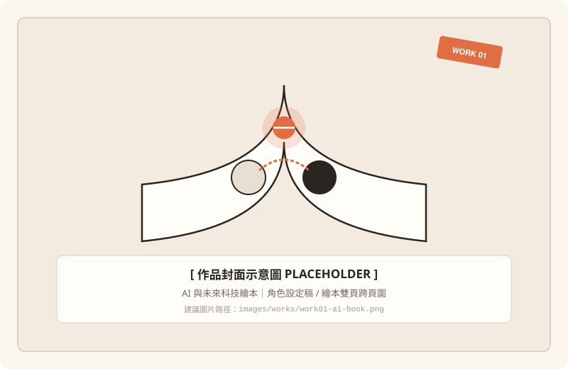
AI & Future Technology
AI 與未來科技繪本
以人工智慧與人類的關係為主題，透過人形 AI 角色與故事設計，探索未來科技與人類情感之間的連結。透過溫暖的繪本語言拉近科技與人的距離。
Photoshop
Illustrator
Procreate
嗨！我是謝佳珍。喜歡繪畫、動畫與視覺設計，對不同媒材和創作形式充滿好奇。從插畫、影像到互動設計，不斷嘗試新的可能，並將日常觀察與想像轉化成自己的作品。
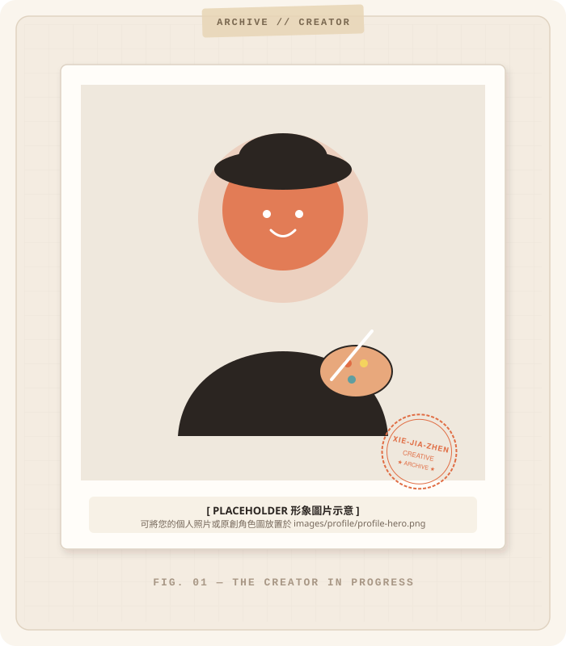
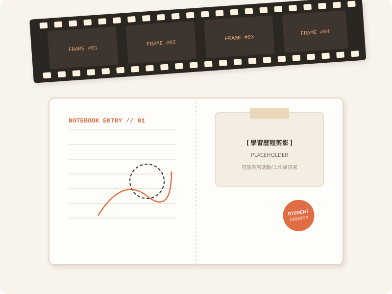
喜歡發想故事、角色與不同的創作世界，讓腦中的點子轉化為有溫度的畫面。
對新工具、新技術與不同藝術風格抱有好奇心，隨時保持海綿般的學習熱忱。
喜歡從日常生活、空間微光與人物互動中尋找靈感，捕捉那些容易被忽略的微小細節。
願意接觸不同媒材與表現手法，不怕犯錯，在實作與動手打樣中持續累積寶貴經驗。
曾參與系上學生組織與活動規劃，接觸活動企劃、文書整理、流程安排與團隊合作，培養出清晰的溝通協調力、應變能力與團隊執行意識。
探索多元創作可能——從手繪插畫的溫暖筆觸，到數位 3D 與網頁互動的無限想像。
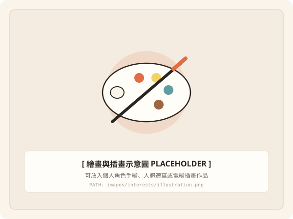
喜歡角色設計、人體繪畫、構圖練習與不同藝術風格。習慣隨身攜帶速寫本記錄生活，並運用數位繪圖板將草稿發展為色彩豐富的插畫創作。
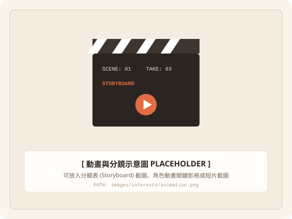
對動畫製作、分鏡、角色塑造及故事敘事有深厚興趣。享受設計時間軸上每秒 24 格的動態節奏，透過連貫的鏡頭畫面傳遞真摯情感。
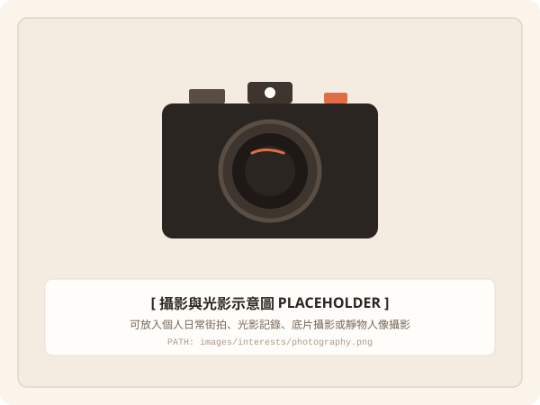
喜歡透過鏡頭觀察生活，探索構圖、光線與影像表現。透過抓拍街頭角落與自然光影，從寫實素材中提煉出具有故事氛圍的視覺畫面。
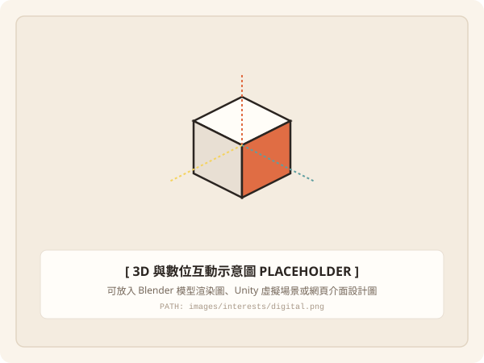
對 3D 建模、VR、互動設計與網頁視覺設計抱有濃厚興趣。樂於嘗試新興數位媒介，將靜態設計延伸至立體空間與可點擊互動的全新體驗。
記錄不同創作階段的探索與實踐成果。點擊作品卡片或封面圖片，可開啟彈窗查看完整的製作背景、學習心得與作品詳情。

以人工智慧與人類的關係為主題，透過人形 AI 角色與故事設計，探索未來科技與人類情感之間的連結。透過溫暖的繪本語言拉近科技與人的距離。
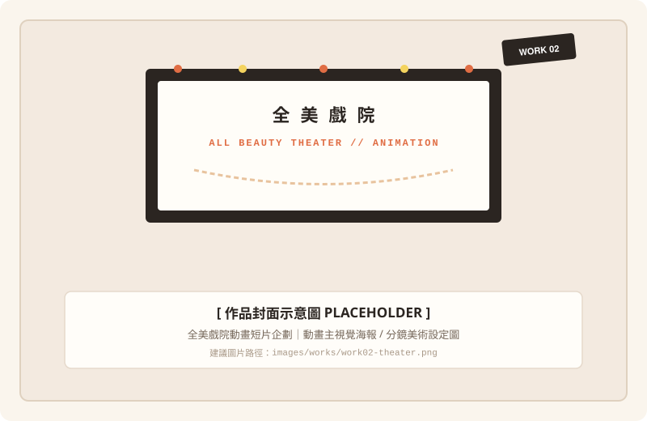
以台南全美戲院為背景，透過祖孫回憶、手繪電影看板與時代變遷，呈現傳統手繪藝術的價值。傳遞職人手作溫度在數位時代的歷史美感。
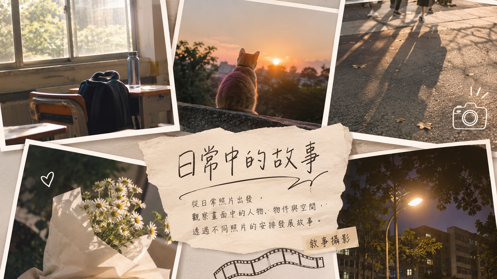
從日常照片出發，觀察畫面中的人物、物件與空間，透過不同照片的編排發展故事。在光影晃動與生活碎片中發現詩意。
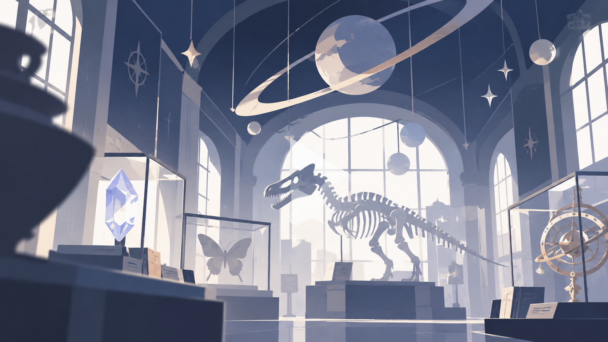
以魔法博物館為概念，運用 Unity 建構虛擬探索空間，結合場景設計、角色移動與動畫。讓參觀者化身探險者，在光影與謎題中沈浸體驗。
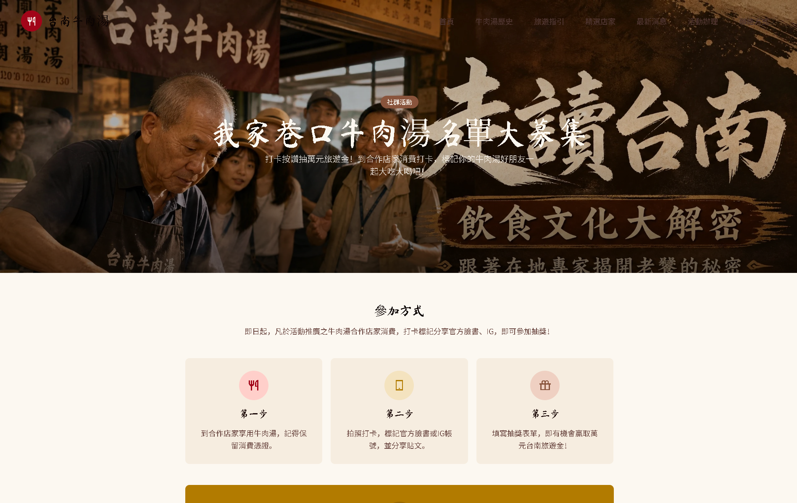
以台南牛肉湯文化與路跑活動為主題，規劃網站主視覺及延伸宣傳設計。結合在地美食文化與運動健康風潮，打造清晰生動的線上資訊體驗。
創作是一場沒有終點的旅程。持續在畫筆、鏡頭與代碼之間，探索表達的新可能。
希望未來能持續累積視覺設計與數位創作能力，探索插畫、動畫、影像與互動媒體之間的結合，逐漸找到最適合自己的創作方向。期待創作出能觸動人心、引起共鳴的好故事。
無論是創作交流、課業指教或未來合作機會，都非常歡迎隨時與我聯絡！
your-email@example.com (預留聯絡信箱)
@your_creative_handle (預留社群帳號)
台灣・台北 / 多媒體動畫學系